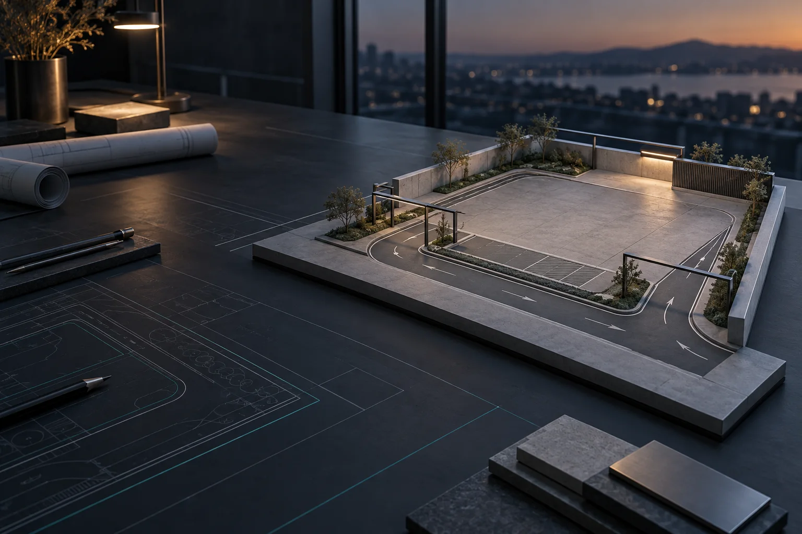

投資獲利試算工具
先釐清規劃假設，再與專人討論。試算不代表收益保證。
無論正在尋找場地，或已有建場方向，先整理現況與目標，逐步把構想變成可討論的方案。
- 01
釐清場地
整理位置、面積、出入口與現場條件，討論適用的洗車流程。
- 02
討論配置
依動線與服務需求，討論格位、設備、操作及支付配置。
- 03
整合建置
釐清設備選型、施工協調與後續維護需求，確認各階段事項。
正在規劃 5–20 格自助洗車場？
查看創業指南準備進度 ↗
LET’S BUILD WHAT’S NEXT
先釐清規劃假設，再與專人討論。試算不代表收益保證。
無論正在尋找場地，或已有建場方向，先整理現況與目標，逐步把構想變成可討論的方案。
整理位置、面積、出入口與現場條件，討論適用的洗車流程。
依動線與服務需求，討論格位、設備、操作及支付配置。
釐清設備選型、施工協調與後續維護需求，確認各階段事項。
正在規劃 5–20 格自助洗車場？
查看創業指南準備進度 ↗
LET’S BUILD WHAT’S NEXT